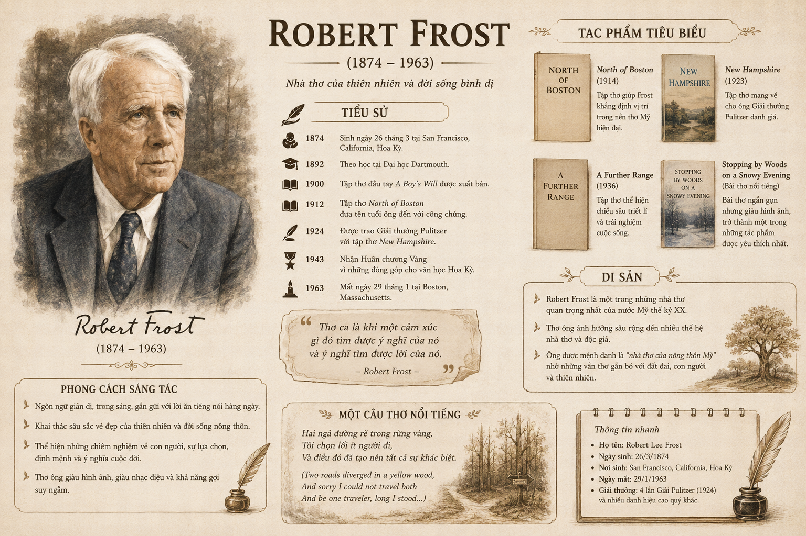

Năm sinh - năm mất: (1874 – 1963)
Tiểu sử & Sự nghiệp: Là nhà thơ Mỹ có tầm ảnh hưởng lớn trong văn học hiện đại. Cho đến nay, ông là nhà thơ duy nhất từng được 4 lần nhận giải thưởng Pulitzer – giải thưởng thường niên uy tín của Mỹ trao cho các lĩnh vực như báo chí, văn chương, âm học,...

Hình 1: Tác giả Robert Frost (1874 – 1963)Hoàn cảnh sáng tác: Tác phẩm được sáng tác vào năm 1915, lấy cảm hứng từ những cuộc đi dạo trong rừng với người bạn của ông – nhà thơ Et-uốt Thô-mớt-xơ (Edward Thomas: 1878 – 1917).
Ý tưởng: Theo lời của Phờ-rót, Thô-mớt-xơ thường băn khoăn không biết nên chọn lối nào để đi, rồi sau khi đã lựa chọn, ông lại nuối tiếc, đáng lẽ nên chọn một lối khác.
Bối cảnh lịch sử: Bài thơ ra đời vào thời điểm nhiều người hoài nghi về lựa chọn của bản thân và thường nghĩ rằng họ nên quay lại con đường mình từng từ bỏ. Không lâu sau khi nhận được bài thơ của Phờ-rót trong một lá thư, Thô-mớt-xơ tham gia vào Chiến tranh thế giới thứ nhất (1914 – 1918) và đã tử trận tại A-rát-xơ (Arras) vào năm 1917.
| Bản dịch 1 (Trịnh Lữ dịch) | Bản dịch 2 (Phan Huy Dũng dịch) |
|---|---|
|
Con đường rẽ làm hai giữa rừng lá vàng, Biết làm sao, tôi chỉ có thể chọn một mà thôi Thân phận lữ hành, tôi đứng mãi Nhìn theo một lối rẽ bên này Đến tận nơi vệt đường khuất dạng sau bụi cây; Thế rồi tôi lại bước vào lối rẽ bên kia, Cơ khác gì đâu, mà có khi lại có lý hơn kìa, Vì cỏ rậm trên mặt đường như thèm muốn người đi; Nhưng thật ra có đôi chỗ đây kia Cũng đã thấy dấu mòn như con đường nọ, Và thế là buổi mai hôm đó Trước hai con đường lá rơi chưa đen vết chân ai. Tôi đành hẹn sẽ quay lại con đường không đi một ngày nào đó! Nhưng lòng thừa hiểu nào biết đến bao giờ. Đường lại đưa đường làm sao biết trước. Tôi sẽ kể chuyện này trong một tiếng thở dài Rằng đâu đó ngay xưa đã lâu lắm rồi: Con đường rẽ làm hai giữa mọi khu rừng, và tôi – Tôi đã chọn lối mòn ít có ai đi, Và điều đó đã làm đổi thay tất cả. |
Hai lối rẽ trong rừng vàng rực lá, Buồn thay biết làm sao chọn cả Là kẻ lữ hành, tôi đứng đó hồi lâu Dõi mũi tầm mắt nọ về đâu Tới tận khúc quanh giữa bụi bờ chìm khuất; Rồi tôi chọn lối này, như chẳng khác, Nhưng xem chừng theo thôi thúc mạnh hơn, Vì cỏ rậm muốn mời chân bước; Dù qua đây đi về phía trước Hai lối như nhau đều có vệt mòn. Hai nẻo đường sáng ấy trải ra Trên thảm lá chưa chân ai in hằn dấu thắm, Sẽ đi lối đầu tiên một ngày nào, muốn lắm! Nhưng đường nối đường, lòng thao thức ma xui, Chắc gì tôi được trở lại chốn này. Rồi với tiếng thở dài tôi sẽ nói Ngày nào kia trong tháng năm vời vợi: Hai lối xuyên rừng, đứng đó một tôi,– Tôi đã chọn lối đi ít dấu chân người, Và điều đó làm nên bao khác biệt. |
👉 Nhân vật trữ tình: Là "kẻ lữ hành" (tôi) đang đi trong một khu rừng mùa thu rực lá vàng.
👉 Tình huống: Đang phân vân, lưỡng lư trước bước ngoặt con đường rẽ làm hai ngả mà anh chỉ có thể chọn một lối đi duy nhất.
👉 Hai lối rẽ có hình thức tương đương nhau, đều phủ đầy lá vàng chưa có dấu chân người in hằn.
👉 Tuy nhiên, một lối rẽ dường như rậm cỏ hơn, ít dấu mòn hơn và như đang "thèm muốn/mời gọi" bước chân người chinh phục.
👉 Nhân vật trữ tình quyết định chọn "lối mòn ít có ai đi" (lối đi ít dấu chân người).
👉 Sự lựa chọn này mang tính cá nhân, độc lập và tạo ra sự khác biệt lớn lao cho cuộc đời anh.
Hình ảnh con đường và lối rẽ trong bài thơ tuân theo cấu trúc biểu trưng toán học - triết học:
1. "Con đường" và "lối rẽ" trong bài thơ có thể xem là những ẩn dụ. Những ẩn dụ đó gợi cho bạn nghĩ đến điều gì?
2. Theo bạn, tại sao Rô-bớt Phờ-rót lại đặt nhan đề bài thơ là Con đường không chọn mà không phải là Con đường tôi chọn hay Con đường ít người đi?
3. Hai lối rẽ trong rừng khác nhau hay giống nhau nhiều hơn? Phải chăng vì điều ấy mà nhân vật trữ tình trong bài thơ cảm thấy khó khăn khi phải chọn lựa một trong hai lối rẽ?
4. Nếu như nhân vật trữ tình không thể chọn cả hai lối rẽ cùng lúc thì anh ta có thể không lựa chọn bất cứ lối rẽ nào được chẳng hạn? Vì sao?
5. Trong bài thơ, cuối cùng nhân vật trữ tình cũng vẫn phải đưa ra lựa chọn của mình. Theo bạn, anh ta có thật sự tin rằng lối rẽ mình chọn là con đường tốt hơn?
6. Bạn có đồng cảm với trạng thái do dự, phân vân của nhân vật trữ tình xuyên suốt bài thơ không? Vì sao?
7. Hãy nêu một thông điệp từ bài thơ có ý nghĩa đối với cá nhân bạn.
✍️ Đề bài: Từ bài thơ này, theo bạn, làm thế nào để chúng ta can đảm hơn trong những lựa chọn của mình trên hành trình trưởng thành? Hãy viết đoạn văn (khoảng 150 chữ) để trả lời câu hỏi trên.
"Hành trình trưởng thành của mỗi con người chính là tập hợp của muôn vàn quyết định và lựa chọn. Để trở nên can đảm hơn trước những ngã rẽ cuộc đời, trước hết chúng ta cần lắng nghe bản thân và trang bị cho mình tri thức cùng bản lĩnh độc lập. Đứng trước sự phân vân, việc chấp nhận rằng không có con đường nào hoàn hảo tuyệt đối sẽ giúp giải tỏa áp lực lo âu. Hãy dũng cảm bước đi trên lối rẽ mình đã chọn, dù đó là lối mòn ít người qua, vì chính sự dấn thân ấy sẽ tạo nên bản sắc và giá trị riêng biệt. Lựa chọn có thể mang lại thành công hoặc thất bại, nhưng quan trọng nhất là tinh thần trách nhiệm và thái độ sẵn sàng đối mặt với mọi hệ quả. Hãy coi mỗi sai lầm là bài học kinh nghiệm quý giá chứ không phải gánh nặng của sự hối tiếc. Sự can đảm không phải là không sợ hãi, mà là quyết định tiến lên phía trước ngay cả khi tương lai phía trước vẫn còn mờ xám."
Giải thưởng Pulitzer mà nhà thơ Robert Frost vinh dự nhận 4 lần là một trong những giải thưởng danh giá nhất thế giới. Bài thơ "Con đường không chọn" thường bị hiểu nhầm là lời kêu gọi sống phá cách, nhưng theo chính Frost tiết lộ trong thư gửi bạn bè, bài thơ còn chứa đựng sự mỉa mai nhẹ nhàng đối với tính cách hay băn khoăn, do dự của con người trước các quyết định.
Tự thiết lập cho bản thân sơ đồ ra quyết định (Decision Matrix) khi đứng trước các lựa chọn học tập hoặc định hướng nghề nghiệp. Rèn luyện tư duy phản biện, chịu trách nhiệm 100% với lựa chọn cá nhân và loại bỏ tâm lý "đổ lỗi cho hoàn cảnh" hay nuối tiếc quá khứ.
Bài 1 (Phân tích cấu trúc khổ thơ): Giả sử bài thơ có 4 khổ, mỗi khổ 5 dòng với vần thơ kết hợp. Hãy tính tỷ lệ phần trăm dung lượng thơ dành cho việc miêu tả bối cảnh so với dung lượng dành cho việc thể hiện suy tư của tác giả.
Lời giải chi tiết:
Tổng số câu thơ trong toàn bài: \( 4 \times 5 = 20 \) câu.
– Dung lượng miêu tả bối cảnh (hai con đường, rừng lá vàng, cỏ rậm, chưa vết chân): khoảng 8 câu (\(40\%\)).
– Dung lượng thể hiện suy tư, tâm trạng phân vân và quyết định của nhân vật trữ tình: 12 câu (\(60\%\)).
👉 Kết luận: Tác giả dành phần lớn dung lượng (\(60\%\)) cho việc khắc họa nội tâm và triết lý lựa chọn của con người.
Bài 2 (Đánh giá thông điệp): Tại sao việc lựa chọn "lối đi ít người qua" lại đòi hỏi lòng dũng cảm? Hãy phân tích 2 rủi ro và 2 cơ hội mà người chọn lối đi này phải đối mặt.
Lời giải chi tiết:
Bài 3 (Vận dụng thực tiễn): Giả sử bạn đứng trước 2 sự lựa chọn: A (Con đường an toàn, nhiều người đi) và B (Con đường thử thách, ít người đi). Hãy viết công thức mô hình hóa yếu tố ảnh hưởng đến quyết định của bạn.
Lời giải chi tiết:
Mô hình quyết định được biểu diễn dưới dạng toán học:
\( Quyết\_Định = \max \left( V_A, V_B \right) \)
Trong đó giá trị của mỗi con đường \( V \) được tính bằng:
\( V = (\text{Lợi ích mong đợi}) \times (\text{Đam mê cá nhân}) - (\text{Mức độ rủi ro chấp nhận}) \)
👉 Việc chọn con đường nào phụ thuộc vào việc cá nhân ưu tiên sự an toàn hay giá trị đột phá cá nhân.